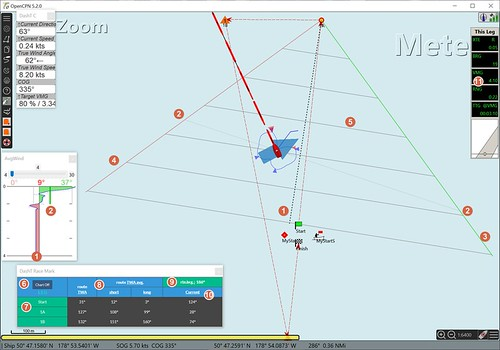

Dashboard Tactics
DashT - Race, Engine/Energy, Signal K, Database, Line Graphs
Any Tactician would find this extensive set of sailing instruments useful and effective.
Links
-
Documentation: DashT@ readthedocs.io for the complete Manual.
-
Maintainer Source: https://github.com/rgleason/dashboard_tactics_pi
-
Installation Instructions: Plugin Download, Install and Enable
-
Legacy Download: Latest Stable
-
Legacy Download Beta Release: beta releases (Click on Assets tab to expand, select your platform’s installer)
-
Cruisers Forum Dashboard-Tactics Thread
Installation
Install and Enable Plugins and Dashboard_Tactics plugin from within OpenCPN using Options > Plugins. That’s it.
Note: Legacy PI Package installation files are still available from Download Page -Linux, Windows, Mac. Make sure you choose the file that is compatible with your computer system.
Features
Enhanced replacement of Dashboard and Tactics Plugins for OpenCPN v5.2 or greater.
The combination of network connectivity processing threads, enhanced Tactics originated numerical algorithms and the usage of latest web-development techniques allow DashT to provide, in addition these great functions:
Tactics instruments and regatta/race processor has been improved, follow the link for details. To mention a few improvements:
-
Average Wind Instrument has a background thread which distributes the same information to all other instruments, such as the below Race assistant instruments. For that purpose it provides a short term and long term integration of the average wind, making it more suitable for different race configurations.The instrument itself has been modified accordingly:

-
A new Tactics instrument which may interest also cruisers is the registering odometer (i.e. an odograph) which has also two independent trip counters, one of which is persistent.

-
Race Start Line training assistance with Zero Burn, laylines, marker dropping, favoured marker indicator, etc.

-
Race Mark - your training assistance for windward/leeward races with ladder rungs, decision assistance for lifts/headers and a peek to next legs
 -
Rolling back every single detail of your race or training data or even long term cruising collected into InfluxDB v2.0 time series database - comes with helper scripts!

-
Visualisation of any collected data parameter underway either with a built in line graphs

-
Signal K data delta channel connector - by-passing OpenCPN (using different channel) - both for NMEA-0183 and NMEA-2000 originated data
-
//Ad infini// creation of dials or numerical data Instruments for Engine and Energy Data originating from NMEA-2000 data bus